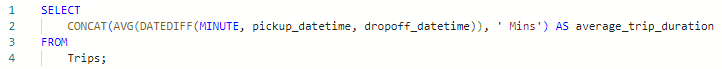
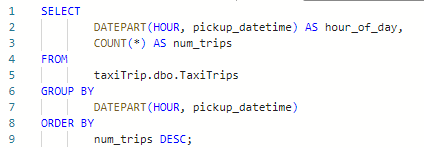
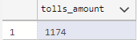

You can view the whole code here.
Introduction:
In this comprehensive analysis of New York City taxi ride data, we've delved into various aspects of the taxi industry, examining key
metrics, patterns, and trends. The dataset encompasses a wide array of information, including trip details, revenue statistics, vendor
performance, and more. This exploration provides valuable insights into the dynamics of taxi services in the city, offering a nuanced
understanding of factors influencing trip patterns, revenue streams, and vendor behaviors. The dataset is available at Kaggle.
metrics, patterns, and trends. The dataset encompasses a wide array of information, including trip details, revenue statistics, vendor
performance, and more. This exploration provides valuable insights into the dynamics of taxi services in the city, offering a nuanced
understanding of factors influencing trip patterns, revenue streams, and vendor behaviors. The dataset is available at Kaggle.
Data Structure:
- ID: Unique identifier for each trip
- VendorID: A code indicating the provider associated with the trip record
- pickup_datetime: date and time when the meter was engaged
- dropoff_datetime: date and time when the meter was disengaged
- passenger_count: the number of passengers in the vihicle
- trip_distance: the distance of each trips
- Ratecode ID: the ID of trip rate code
- store_and_fwd_flag: Thi flag indicate whether the trip was held in vehicle memory record: Yes, No
- PULocation ID: trip pickup location ID
- DOLocation ID: trip dropoff location ID
- payment_type: type of payment received by the vendor
- fare_amount: Trip price
- extra: extra payment if any
- mta_tax: price of Metropolitan Transaportation Authority tax if any
- tip_amount: amount of tip received by the vendor if any
- tolls_amount: amount paid as toll fee
- improvement_surcharge: amount paid for improvement surcharge by the vendor
- total_amount: total amount received for each trip
Checking Data Info:
Check Data Type of Each Column:
Result:
All data types are correctly assigned
Check for Missing Values:
Result:
No null values
DATA EXPLORATIONS:
Total Trips:
Result:
The dataset contains a total of 22,699 taxi trips. This is the overall count of records in the dataset,
indicating the number of individual taxi journeys captured in your analysis.
indicating the number of individual taxi journeys captured in your analysis.
Passengers Count by Each Vendors:
Result:
The dataset has 10,073 trips from VendorID 1 and 12,626 trips from VendorID 2. The passenger count
information is not clearly specified for each VendorID.
information is not clearly specified for each VendorID.
Total Trips Distance:
Result:
The total distance covered by all taxi trips in the dataset is 66,129.3 kilometers. This represents the cumulative
distance traveled across all recorded taxi journeys.
distance traveled across all recorded taxi journeys.
Average Trips Distance:
Result:
The average trip distance for all taxi journeys in the dataset is 2.91 kilometers. This provides a measure of the
typical distance covered in a single taxi trip based on the available data.
typical distance covered in a single taxi trip based on the available data.
Total Trips duration:
Result:
The total duration of all taxi trips in the dataset is 6,416 hours. This represents the cumulative time spent
across all recorded taxi journeys.
across all recorded taxi journeys.
Average Trips Duration:

Result:
The average duration of a taxi trip in the dataset is 17 minutes. This provides insight into the typical length of
time passengers spend on a single taxi journey based on the available data.
time passengers spend on a single taxi journey based on the available data.
Create New Column to Calculate Trip Seconds:
Result:
_result.png)
Trips by Hours and Average Speed:
Result:
This breakdown provides insights into the patterns of taxi usage throughout the day, with variations in the number of trips
and average speeds during different hours. For example, there's a noticeable increase in average speed during the early
morning hours (3 AM and 4 AM) and a peak in the number of trips during rush hours (7 AM and 8 AM).
and average speeds during different hours. For example, there's a noticeable increase in average speed during the early
morning hours (3 AM and 4 AM) and a peak in the number of trips during rush hours (7 AM and 8 AM).
Number Trips, Total Distance, Average Distance, Minimum Distance, and Maximum Distance by Months:
Result:
This breakdown provides insights into the variations in taxi usage and distances traveled throughout the year. For example,
June has the highest total distance and average distance, while February has the lowest average distance. The minimum and
maximum distances give an idea of the range of trip lengths during each month.
June has the highest total distance and average distance, while February has the lowest average distance. The minimum and
maximum distances give an idea of the range of trip lengths during each month.
Trips Ranking by Months and Pickup Time:
Result:
This information helps identify the longest taxi trips overall and within each month. For example, the first entry has the
longest distance (33.96 km) and is ranked as the longest trip overall and within the month of June.
longest distance (33.96 km) and is ranked as the longest trip overall and within the month of June.
Busiest Hour of Day:

Result:
This information highlights the peak hours of taxi activity, with 19:00 (7 PM) being the busiest, followed by 18:00 (6 PM),
20:00 (8 PM), and so on. Understanding the busiest hours can be valuable for optimizing taxi services and managing resources
efficiently during high-demand periods.
20:00 (8 PM), and so on. Understanding the busiest hours can be valuable for optimizing taxi services and managing resources
efficiently during high-demand periods.
Top 10 Popular Pickup Location:
Result:
This data reveals the popularity of various pickup locations, with PULocationID 237 having the highest number of trips (890).
Understanding popular pickup locations is crucial for taxi services to optimize their operations and respond to demand effectively
in different areas.
Understanding popular pickup locations is crucial for taxi services to optimize their operations and respond to demand effectively
in different areas.
Popular Dropoff Location:
Result:
This data provides insights into the popularity of various dropoff locations, with DOLocationID 161 having the highest number of
trips (858). Understanding popular dropoff locations is essential for taxi services to optimize routes, allocate resources
effectively, and enhance overall service efficiency.
trips (858). Understanding popular dropoff locations is essential for taxi services to optimize routes, allocate resources
effectively, and enhance overall service efficiency.
Average Time Taken and Sum of Trips Based on Days of the Week:

Result:
This breakdown provides insights into the average and total time spent on taxi trips on different days of the week. For example,
Thursday and Wednesday have the highest average trip duration, while Saturday and Sunday have higher total trip durations.
Thursday and Wednesday have the highest average trip duration, while Saturday and Sunday have higher total trip durations.
Most Common Hour of Day at Specific Dropoff Location:
Result:
This breakdown provides insights into the peak hours for dropoffs at specific locations. For example, for DOLocationID 162, the most
common hour for dropoffs is 8 AM, with 73 trips. Understanding these patterns can help optimize services and allocate resources
effectively during peak times at specific dropoff locations.
common hour for dropoffs is 8 AM, with 73 trips. Understanding these patterns can help optimize services and allocate resources
effectively during peak times at specific dropoff locations.
Most Common Payment Method:
Result:
This breakdown indicates that payment type 1 is the most common, with 15,265 trips, followed by payment type 2 with 7,267 trips.
Payment types 3 and 4 are less common, with 121 and 46 trips, respectively. Understanding payment preferences helps in catering to
customer needs and optimizing payment processing systems.
Payment types 3 and 4 are less common, with 121 and 46 trips, respectively. Understanding payment preferences helps in catering to
customer needs and optimizing payment processing systems.
Analysing Trips by Quarters:
Result:
This information provides insights into the seasonal variations in taxi usage throughout the year. For example, the 2nd Quarter has
the highest number of trips (9,811), while the 3rd Quarter has the lowest number of trips (8,611). Understanding these patterns can help
in planning and resource allocation based on seasonal demand.
the highest number of trips (9,811), while the 3rd Quarter has the lowest number of trips (8,611). Understanding these patterns can help
in planning and resource allocation based on seasonal demand.
Preferable Payment Method by Vendors:
Result:
For VendorID 1, the most common payment method is Type 1 (6,772 trips), followed by Type 2 (3,148 trips), and Types 3 and 4 with 114
and 39 trips, respectively.
For VendorID 2, the preferred payment method is also Type 1 (8,493 trips), followed by Type 2 (4,119 trips), and Types 3 and 4 with 7
trips each. Understanding these preferences is crucial for optimizing payment systems for each vendor.
and 39 trips, respectively.
For VendorID 2, the preferred payment method is also Type 1 (8,493 trips), followed by Type 2 (4,119 trips), and Types 3 and 4 with 7
trips each. Understanding these preferences is crucial for optimizing payment systems for each vendor.
Analysing Longest Trip Duration:
Result:
Payment Type Percentage Distribution:
Result:
Payment type 1 is the most common, representing 67.25% of the total trips.
Payment type 2 follows, representing 32.01%.
Payment types 3 and 4 are less common, representing 0.53% and 0.20%, respectively.
Payment type 2 follows, representing 32.01%.
Payment types 3 and 4 are less common, representing 0.53% and 0.20%, respectively.
Top 10 Trips by Total Amount:
Result:
Average Tip by Hours:
Result:
Understanding the average tip amounts by the hour provides insights into tipping patterns throughout the day. For example,
the highest average tip is at 5 AM, with $2.92, while the lowest is at 1 AM, with $1.60. This information can be valuable for
drivers and taxi services to optimize their services and potentially increase earnings during peak tipping hours.
the highest average tip is at 5 AM, with $2.92, while the lowest is at 1 AM, with $1.60. This information can be valuable for
drivers and taxi services to optimize their services and potentially increase earnings during peak tipping hours.
Average Fare Amount by Payment Type:
Result:
Understanding the average fare amounts for different payment types provides insights into the financial aspects of taxi services.
For example, payment type 1 has the highest average fare amount at $13.67, while payment type 4 has the lowest at $10.13. This
information can be valuable for both service providers and customers in understanding the cost dynamics associated with different
payment methods.
For example, payment type 1 has the highest average fare amount at $13.67, while payment type 4 has the lowest at $10.13. This
information can be valuable for both service providers and customers in understanding the cost dynamics associated with different
payment methods.
Analysing Daily Passengers Count:
Result:
Saturday has the highest average number of passengers at 5,766, while Monday has the lowest at 4,750. This information can be useful
for taxi services in optimizing their operations and resources based on expected passenger demand on different days.
for taxi services in optimizing their operations and resources based on expected passenger demand on different days.
Analysing Busiest Days of the Week:
Result:
Friday: With 3,413 trips, Friday emerges as the day with the highest taxi demand during the week.
Thursday: Following closely, Thursday records 3,402 trips, making it the second busiest day.
Wednesday: Wednesday is also among the busiest days, with 3,390 taxi trips.
Saturday: Despite being the weekend, Saturday sees substantial demand with 3,367 trips.
Tuesday: Tuesday follows with 3,198 trips, contributing to the overall midweek demand.
Sunday: While slightly less busy, Sunday still registers 2,998 trips.
Monday: The beginning of the week shows 2,931 taxi trips.
Thursday: Following closely, Thursday records 3,402 trips, making it the second busiest day.
Wednesday: Wednesday is also among the busiest days, with 3,390 taxi trips.
Saturday: Despite being the weekend, Saturday sees substantial demand with 3,367 trips.
Tuesday: Tuesday follows with 3,198 trips, contributing to the overall midweek demand.
Sunday: While slightly less busy, Sunday still registers 2,998 trips.
Monday: The beginning of the week shows 2,931 taxi trips.
Busiest Month by Number of Trips:
Result:
The analysis indicates the number of taxi trips for each month of the year, highlighting the busiest months:
March: March is the busiest month, recording 2,049 taxi trips.
October: Following closely, October is the second busiest month with 2,027 trips.
April: April ranks third with 2,019 taxi trips.
May: May is the fourth busiest month with 2,013 trips.
January: Starting the year strong, January records 1,997 taxi trips.
June: June follows closely with 1,964 trips.
December: December, towards the end of the year, has 1,863 taxi trips.
November: November follows with 1,843 trips.
February: February records 1,769 taxi trips.
September: September has 1,734 taxi trips.
August: August records 1,724 taxi trips.
July: July is the least busy month among the top months with 1,697 trips.
Understanding the busiest months is crucial for taxi services to strategically manage their operations, allocate resources
efficiently, and potentially capitalize on peak demand periods.
March: March is the busiest month, recording 2,049 taxi trips.
October: Following closely, October is the second busiest month with 2,027 trips.
April: April ranks third with 2,019 taxi trips.
May: May is the fourth busiest month with 2,013 trips.
January: Starting the year strong, January records 1,997 taxi trips.
June: June follows closely with 1,964 trips.
December: December, towards the end of the year, has 1,863 taxi trips.
November: November follows with 1,843 trips.
February: February records 1,769 taxi trips.
September: September has 1,734 taxi trips.
August: August records 1,724 taxi trips.
July: July is the least busy month among the top months with 1,697 trips.
Understanding the busiest months is crucial for taxi services to strategically manage their operations, allocate resources
efficiently, and potentially capitalize on peak demand periods.
Analysing the Relationship Between Improvement Surcharge and Average Fare Amount:
Result:
The analysis shows the relationship between the improvement surcharge and the average fare amount for taxi trips:
Improvement Surcharge: 0 - In instances where there is no improvement surcharge, the average fare amount is $10.67.
Improvement Surcharge: 0.3 - When a surcharge of $0.3 is applied, the average fare amount increases to $13.27.
This information highlights that the presence of an improvement surcharge is associated with a higher average fare
amount. The surcharge appears to contribute an additional amount to the fare, indicating its impact on the overall cost
of taxi trips. Understanding such relationships is valuable for both taxi services and passengers in comprehending the
factors influencing fare amounts.
Improvement Surcharge: 0 - In instances where there is no improvement surcharge, the average fare amount is $10.67.
Improvement Surcharge: 0.3 - When a surcharge of $0.3 is applied, the average fare amount increases to $13.27.
This information highlights that the presence of an improvement surcharge is associated with a higher average fare
amount. The surcharge appears to contribute an additional amount to the fare, indicating its impact on the overall cost
of taxi trips. Understanding such relationships is valuable for both taxi services and passengers in comprehending the
factors influencing fare amounts.
Analysing the Relationship Between MTA Tax and Average Fare Amount:
Result:
The analysis reveals the relationship between the MTA tax and the average fare amount for taxi trips:
MTA Tax: 0 - When there is no MTA tax (0), the average fare amount is $69.59.
MTA Tax: 0.5 - When an MTA tax of $0.5 is applied, the average fare amount decreases to $13.05.
This information suggests an inverse relationship between the presence of MTA tax and the average fare amount. When an MTA tax is
applied, the average fare amount decreases significantly. It's essential for passengers to be aware of such tax implications, and
for taxi services to consider the impact on fare amounts due to additional charges like MTA tax.
MTA Tax: 0 - When there is no MTA tax (0), the average fare amount is $69.59.
MTA Tax: 0.5 - When an MTA tax of $0.5 is applied, the average fare amount decreases to $13.05.
This information suggests an inverse relationship between the presence of MTA tax and the average fare amount. When an MTA tax is
applied, the average fare amount decreases significantly. It's essential for passengers to be aware of such tax implications, and
for taxi services to consider the impact on fare amounts due to additional charges like MTA tax.
Analysing Trips Where Tip is Received and Trips Where Tip is not Received:
Result:
The analysis differentiates between taxi trips where a tip was received and those where no tip was received:
Trips with Tip Received: There are 14,642 trips where passengers provided a tip.
Trips with No Tip: On the other hand, there are 8,057 trips where no tip was received.
Understanding the distribution of tips is valuable for taxi services to assess customer satisfaction, driver
performance, and potentially optimize strategies to encourage tipping.
Trips with Tip Received: There are 14,642 trips where passengers provided a tip.
Trips with No Tip: On the other hand, there are 8,057 trips where no tip was received.
Understanding the distribution of tips is valuable for taxi services to assess customer satisfaction, driver
performance, and potentially optimize strategies to encourage tipping.
Average Tip Amount by Longest Trips Distance:
Result:

In summary, the top 15 longest taxi trips have distances ranging from 26.64 km to 33.96 km. The average tip amounts for these
long-distance trips vary from $1.55 to $2.12. Interestingly, despite the longer travel distances, the average tip amounts don't
necessarily increase proportionally, suggesting that factors other than distance may influence tipping behaviors. Understanding
these patterns can be valuable for taxi services in optimizing driver incentives and improving customer satisfaction.
long-distance trips vary from $1.55 to $2.12. Interestingly, despite the longer travel distances, the average tip amounts don't
necessarily increase proportionally, suggesting that factors other than distance may influence tipping behaviors. Understanding
these patterns can be valuable for taxi services in optimizing driver incentives and improving customer satisfaction.
Calculating Monthly Revenue
Result:
This revenue breakdown provides insights into the seasonal variations in the taxi business. Months with higher total revenue may
indicate increased demand or higher fares, while lower revenue months may have factors like reduced demand or promotional pricing.
Understanding these patterns can be valuable for optimizing business strategies and planning resource allocation.
indicate increased demand or higher fares, while lower revenue months may have factors like reduced demand or promotional pricing.
Understanding these patterns can be valuable for optimizing business strategies and planning resource allocation.
Calculating Revenue by Days of the Week:
Result:
This analysis reveals that Thursdays have the highest total revenue, while Sundays have the lowest. Understanding these revenue
patterns on different days of the week can guide operational decisions and marketing strategies for taxi services.
patterns on different days of the week can guide operational decisions and marketing strategies for taxi services.
Calculating Revenue by Hours of the Day:
Result:
This breakdown provides insights into the hourly revenue distribution, indicating peak and off-peak periods. This information can
be crucial for optimizing taxi operations, such as adjusting the number of available taxis during high-demand hours.
be crucial for optimizing taxi operations, such as adjusting the number of available taxis during high-demand hours.
Analysing the Number of Trips Where Tolls were Paid and Most Pickup and Dropoff Loacation
Tolls were Paid:
Tolls were Paid:

Result:

The dataset reveals that a total of 1,174 taxi trips incurred toll charges. Among the pickup locations (PULocationID), the top
contributors to toll expenses were identified as follows: 164, 161, 246, 230, 48, 107, 170, 138, and 132. Similarly, for dropoff
locations (DOLocationID), toll-heavy locations included 1, 265, 23, and 118.
The toll amounts varied across these locations, ranging from $16.26 to $18.28. This information is crucial for taxi companies to
understand the geographical patterns of toll expenses, aiding in route optimization and strategic decision-making related to
pricing structures.
contributors to toll expenses were identified as follows: 164, 161, 246, 230, 48, 107, 170, 138, and 132. Similarly, for dropoff
locations (DOLocationID), toll-heavy locations included 1, 265, 23, and 118.
The toll amounts varied across these locations, ranging from $16.26 to $18.28. This information is crucial for taxi companies to
understand the geographical patterns of toll expenses, aiding in route optimization and strategic decision-making related to
pricing structures.
Tolls Paid By Vendors:

Result:
The dataset indicates that among the taxi vendors, VendorID 1 incurred toll expenses totaling $2,972.73, while VendorID 2 paid a
higher amount, summing up to $4,121.65. This information is valuable for assessing the financial impact of toll charges on each
vendor, contributing to financial planning and vendor management strategies.
higher amount, summing up to $4,121.65. This information is valuable for assessing the financial impact of toll charges on each
vendor, contributing to financial planning and vendor management strategies.
Calculating Total Extra Charges Paid By Vendors:
Result:

The analysis reveals that VendorID 1 accrued a total of $14,357.63 in extra charges, whereas VendorID 2 incurred a higher amount, reaching
$18,425.15. Understanding the distribution of extra charges among different vendors can be essential for evaluating their cost structures
and optimizing business operations.
$18,425.15. Understanding the distribution of extra charges among different vendors can be essential for evaluating their cost structures
and optimizing business operations.
Calculating Total Revenue by Vendors After Deducting Extra Charges:
Result:
After deducting extra charges, the total revenue for VendorID 1 is $137,947.99, while VendorID 2 generated $172,166.63. This
adjusted revenue provides a clearer picture of the earnings for each vendor, considering the impact of extra charges on their
overall income.
adjusted revenue provides a clearer picture of the earnings for each vendor, considering the impact of extra charges on their
overall income.
Conclusion:
The analysis has shed light on the intricacies of New York City's taxi industry, revealing noteworthy trends and patterns. From
examining trip distribution across hours, days, and months, to scrutinizing revenue generation and vendor performance, we've gained
a holistic view of the taxi ecosystem. Key findings include the busiest hours, popular pickup and drop-off locations, preferred payment
methods, and more. Vendors have been evaluated based on trip counts, revenue, and customer preferences.
These insights not only serve to enrich our understanding of the taxi landscape but also hold practical implications for industry
stakeholders, policymakers, and taxi service providers. As the industry continues to evolve, informed decision-making becomes increasingly
crucial. This analysis provides a robust foundation for strategic planning, resource allocation, and service optimization within the New
York City taxi sector.
examining trip distribution across hours, days, and months, to scrutinizing revenue generation and vendor performance, we've gained
a holistic view of the taxi ecosystem. Key findings include the busiest hours, popular pickup and drop-off locations, preferred payment
methods, and more. Vendors have been evaluated based on trip counts, revenue, and customer preferences.
These insights not only serve to enrich our understanding of the taxi landscape but also hold practical implications for industry
stakeholders, policymakers, and taxi service providers. As the industry continues to evolve, informed decision-making becomes increasingly
crucial. This analysis provides a robust foundation for strategic planning, resource allocation, and service optimization within the New
York City taxi sector.
Power Bi Dashboard
You can view the whole code here.